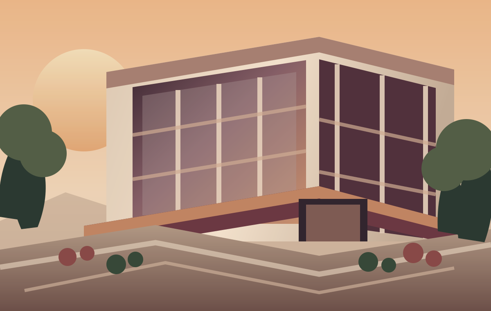

Learn by doing
Work through clear tasks and real-world style briefs.
Careers / Professional development
Explore practical opportunities, contribute to meaningful work and build the confidence to take your next professional step.

Find your starting point
Explore structured programmes, focused project work and early-career roles. Each pathway is designed to turn learning into visible progress.
Develop practical skills through guided assignments, defined outcomes and structured feedback.
Work through focused briefs and collaborative projects that help build a portfolio of evidence.
Discover entry-level openings and professional pathways shared from external sources.
01 / Learn through practice
Structured experience with defined learning outcomes.
02 / Contribute to real briefs
Focused projects with tangible deliverables.
03 / Take the next step
Entry-level and early professional opportunities from external sources.
Beyond the line on your CV
Professional development should leave you with more than a title. It should give you practical work to reflect on, skills you can explain and a clearer sense of what you can contribute.
Work through clear tasks and real-world style briefs.
Create work you can explain, reflect on and improve.
Understand what is working and where to grow next.
Completion documentation follows programme requirements.
For institutions & organisations
We welcome conversations with colleges, universities, training providers, coaching centres and consultancies interested in practical learning and professional development.
Academic & industry landscape
Independent institutional and industry references